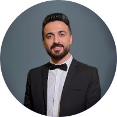

Über mich
Fullstack Entwicklung
Mehr als 4.5 Jahre Erfahrung in Frontend (React, TypeScript) und Backend (Spring Boot, Java).
NLP & Forschung
Fokus auf Low-Resource-Sprachen, maschinelle Übersetzung und kurdische Linguistik (Thesis & Konferenzen).
Soziales Engagement
Ehrenamtlich als Sprachmittler, Nachhilfelehrer und Multiplikator (AWO, Diakonie, BamF).
Sprachen & Weiterbildung
Deutsch C1, Englisch B2, Arabisch C2, Kurdisch Muttersprache. Zertifikate in Sprachkursen und Coaching.
4.5+
Jahre Berufserfahrung
5+
Weiterbildungen & Zertifikate